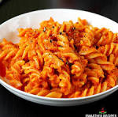

pasta recipe

ingredients:
- Pasta: 1½ to 2 cups (penne, macaroni, or farfalle)
- Oil or Butter: 2 tablespoons
- Aromatics: 1 teaspoon finely chopped garlic, ½ inch ginger (optional), and 1 medium chopped onion
- Vegetables: ½ cup mixed vegetables (carrots, green peas, capsicum/bell peppers, or sweet corn)
- Tomatoes: 1¼ cups finely chopped or pureed tomatoes
- Spices: ½ teaspoon cumin seeds, ¼ teaspoon turmeric powder, ½ teaspoon red chili powder, ½ teaspoon garam masala, salt to taste, and a pinch of kasuri methi or Italian herbs
- Sauces & Garnish: 1 tablespoon tomato ketchup, fresh coriander leaves, and optional cheese or cream
instructions:
- Boil the Pasta
- Sauté the Aromatics and Vegetables
- Prepare the Masala Sauce
- Combine Pasta and Sauce
- Garnish and Serve
Back to Recipes